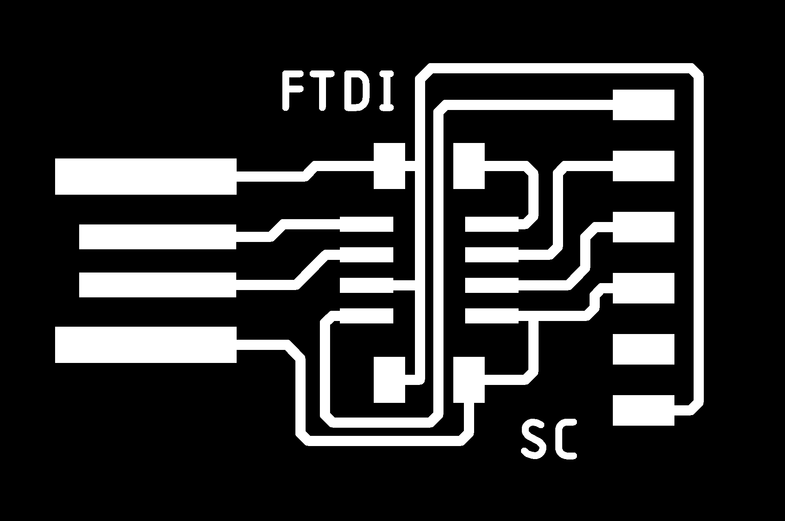
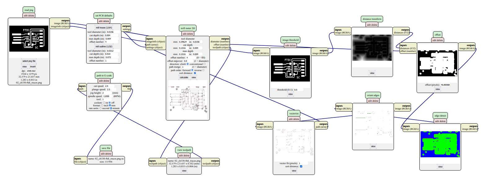
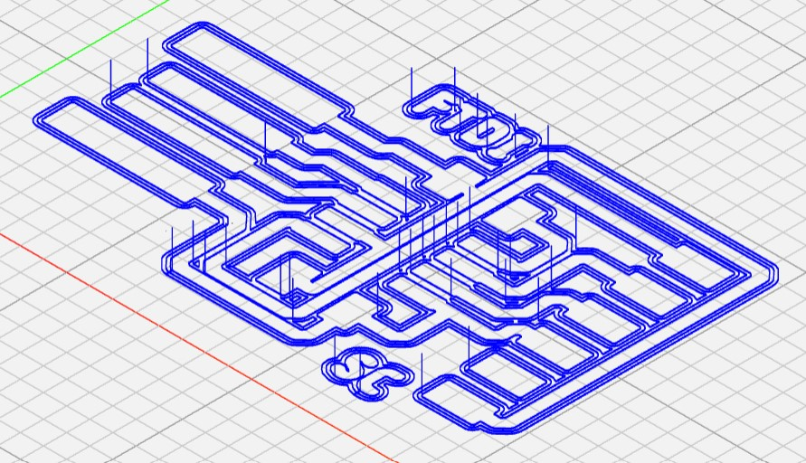
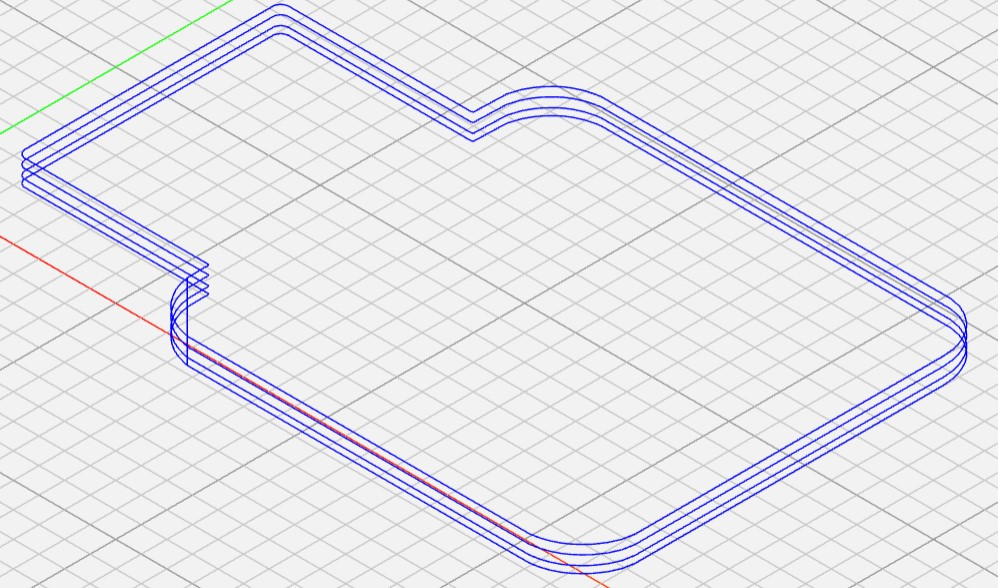
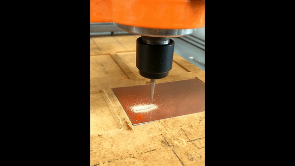
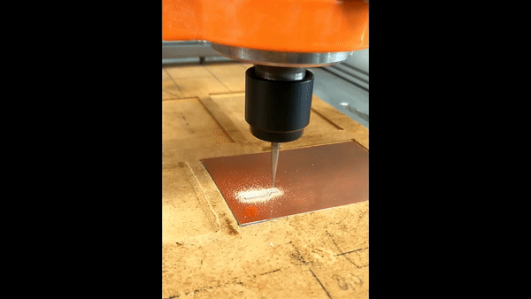
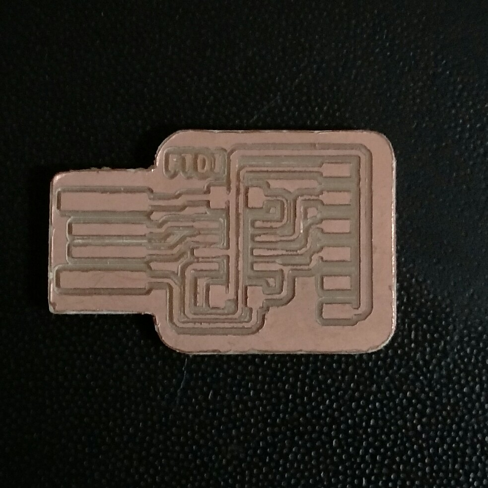
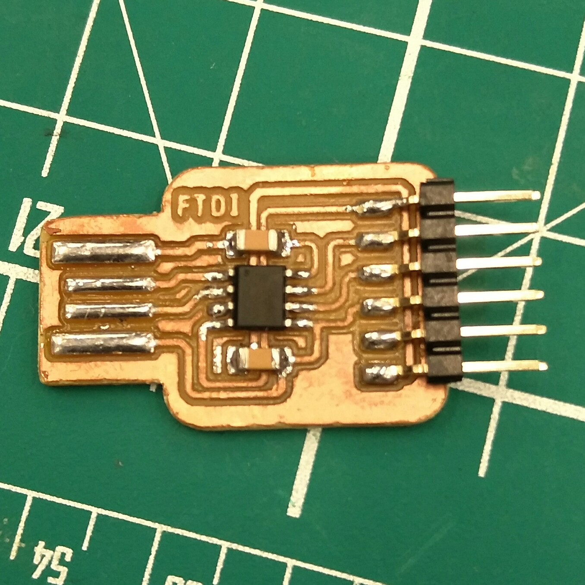

Electronics Production
Milling an example (pre-designed) FTDI adapter
These are the PNG files provided.


In order to prepare these files for milling, they need to be converted into Gcode.
Using the mods tool, i was able to convert the black and white png file into "nc" files, that can be read by the milling machine.
 
Important checks before milling:

Milling of PCB:
 

This is the milled PCB (i had to end the milling early due to time constraints, hence the absense of the SC text): 
After soldering: 